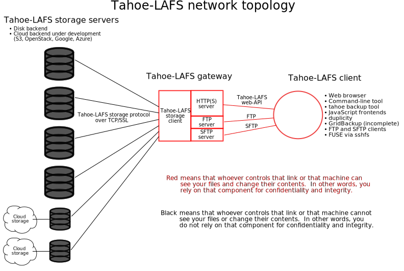

Welcome to Tahoe-LAFS!¶
What is Tahoe-LAFS?¶
Welcome to Tahoe-LAFS, the first decentralized storage system with provider-independent security.
Tahoe-LAFS is a system that helps you to store files. You run a client program on your computer, which talks to one or more storage servers on other computers. When you tell your client to store a file, it will encrypt that file, encode it into multiple pieces, then spread those pieces out among multiple servers. The pieces are all encrypted and protected against modifications. Later, when you ask your client to retrieve the file, it will find the necessary pieces, make sure they haven’t been corrupted, reassemble them, and decrypt the result.
The client creates more pieces (or “shares”) than it will eventually need, so even if some of the servers fail, you can still get your data back. Corrupt shares are detected and ignored, so the system can tolerate server-side hard-drive errors. All files are encrypted (with a unique key) before uploading, so even a malicious server operator cannot read your data. The only thing you ask of the servers is that they can (usually) provide the shares when you ask for them: you aren’t relying upon them for confidentiality, integrity, or absolute availability.
What is “provider-independent security”?¶
Every seller of cloud storage services will tell you that their service is “secure”. But what they mean by that is something fundamentally different from what we mean. What they mean by “secure” is that after you’ve given them the power to read and modify your data, they try really hard not to let this power be abused. This turns out to be difficult! Bugs, misconfigurations, or operator error can accidentally expose your data to another customer or to the public, or can corrupt your data. Criminals routinely gain illicit access to corporate servers. Even more insidious is the fact that the employees themselves sometimes violate customer privacy out of carelessness, avarice, or mere curiosity. The most conscientious of these service providers spend considerable effort and expense trying to mitigate these risks.
What we mean by “security” is something different. The service provider never has the ability to read or modify your data in the first place: never. If you use Tahoe-LAFS, then all of the threats described above are non-issues to you. Not only is it easy and inexpensive for the service provider to maintain the security of your data, but in fact they couldn’t violate its security if they tried. This is what we call provider-independent security.
This guarantee is integrated naturally into the Tahoe-LAFS storage system and doesn’t require you to perform a manual pre-encryption step or cumbersome key management. (After all, having to do cumbersome manual operations when storing or accessing your data would nullify one of the primary benefits of using cloud storage in the first place: convenience.)
Here’s how it works:
A “storage grid” is made up of a number of storage servers. A storage server has direct attached storage (typically one or more hard disks). A “gateway” communicates with storage nodes, and uses them to provide access to the grid over protocols such as HTTP(S), SFTP or FTP.
Note that you can find “client” used to refer to gateway nodes (which act as a client to storage servers), and also to processes or programs connecting to a gateway node and performing operations on the grid – for example, a CLI command, Web browser, SFTP client, or FTP client.
Users do not rely on storage servers to provide confidentiality nor integrity for their data – instead all of the data is encrypted and integrity-checked by the gateway, so that the servers can neither read nor modify the contents of the files.
Users do rely on storage servers for availability. The ciphertext is
erasure-coded into N shares distributed across at least H distinct
storage servers (the default value for N is 10 and for H is 7) so
that it can be recovered from any K of these servers (the default
value of K is 3). Therefore only the failure of H-K+1 (with the
defaults, 5) servers can make the data unavailable.
In the typical deployment mode each user runs her own gateway on her own machine. This way she relies on her own machine for the confidentiality and integrity of the data.
An alternate deployment mode is that the gateway runs on a remote machine and the user connects to it over HTTPS or SFTP. This means that the operator of the gateway can view and modify the user’s data (the user relies on the gateway for confidentiality and integrity), but the advantage is that the user can access the Tahoe-LAFS grid with a client that doesn’t have the gateway software installed, such as an Internet kiosk or cell phone.
Access Control¶
There are two kinds of files: immutable and mutable. When you upload a file to the storage grid you can choose which kind of file it will be in the grid. Immutable files can’t be modified once they have been uploaded. A mutable file can be modified by someone with read-write access to it. A user can have read-write access to a mutable file or read-only access to it, or no access to it at all.
A user who has read-write access to a mutable file or directory can give another user read-write access to that file or directory, or they can give read-only access to that file or directory. A user who has read-only access to a file or directory can give another user read-only access to it.
When linking a file or directory into a parent directory, you can use a read-write link or a read-only link. If you use a read-write link, then anyone who has read-write access to the parent directory can gain read-write access to the child, and anyone who has read-only access to the parent directory can gain read-only access to the child. If you use a read-only link, then anyone who has either read-write or read-only access to the parent directory can gain read-only access to the child.
For more technical detail, please see the the doc page on the Wiki.
Get Started¶
To use Tahoe-LAFS, please see Installing Tahoe-LAFS.
License¶
Tahoe-LAFS is an open-source project; please see the top-level README for details.